THE GOSPEL ACCORDING TO
S. MARK.
1
1 The beginning of the gospel of Jesus Christ, the Son of God; 2 as it is written in the prophets, Behold, I send my messenger before thy face, which shall prepare thy way before thee. 3 The voice of one crying in the wilderness, Prepare ye the way of the Lord, make his paths straight. 4 John did baptize in the wilderness, and preach the baptism of repentance for the remission of sins. 5 And there went out unto him all the land of Judea, and they of Jerusalem, and were all baptized of him in the river of Jordan, confessing their sins. 6 And John was clothed with camel’s hair, and with a girdle of a skin about his loins; and he did eat locusts and wild honey;
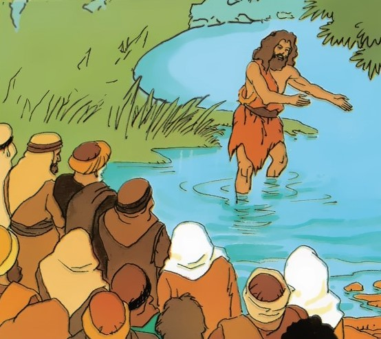
7 and preached, saying, There cometh one mightier than I after me, the latchet of whose shoes I am not worthy to stoop down and unloose. 8 I indeed have baptized you with water: but he shall baptize you with the Holy Ghost.
9 And it came to pass in those days, that Jesus came from Nazareth of Galilee, and was baptized of John in Jordan.
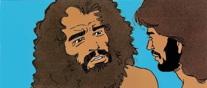
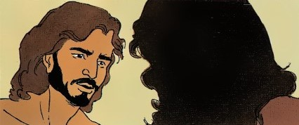
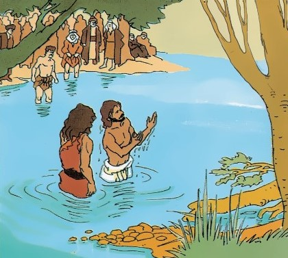
10 And straightway coming up out of the water, he saw the heavens opened, and the Spirit like a dove descending upon him: 11 and there came a voice from heaven, saying, Thou art my beloved Son, in whom I am well pleased.
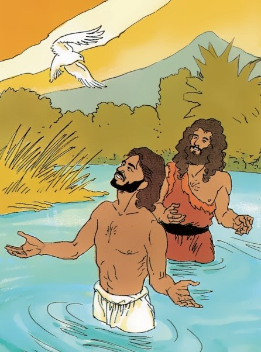
12 And immediately the Spirit driveth him into the wilderness.
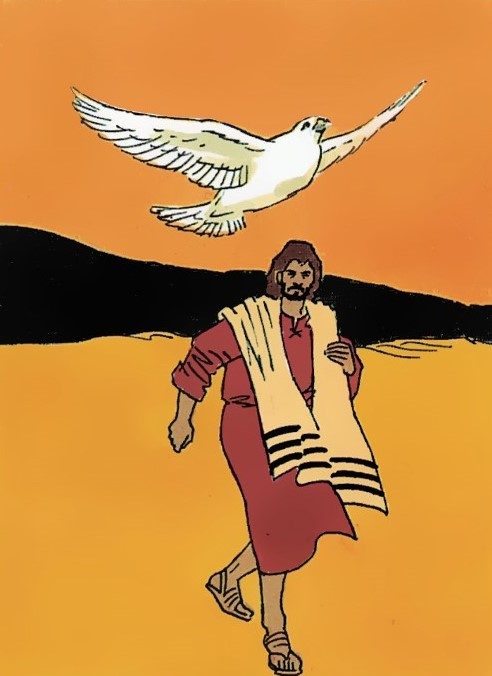
13 And he was there in the wilderness forty days, tempted of Satan; and was with the wild beasts; and the angels ministered unto him.
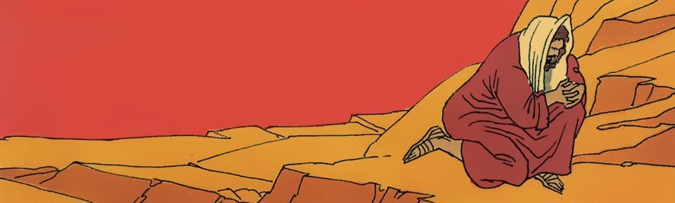
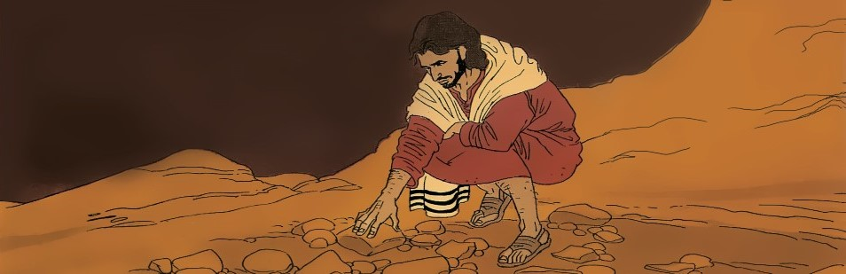
14 Now after that John was put in prison, Jesus came into Galilee, preaching the gospel of the kingdom of God,
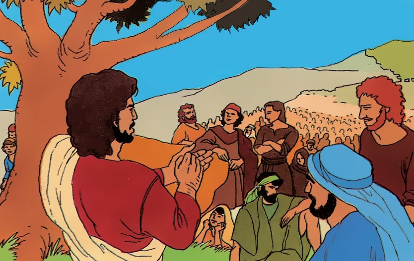
15 and saying, The time is fulfilled, and the kingdom of God is at hand: repent ye, and believe the gospel.
16 Now as he walked by the sea of Galilee, he saw Simon and Andrew his brother casting a net into the sea: for they were fishers.
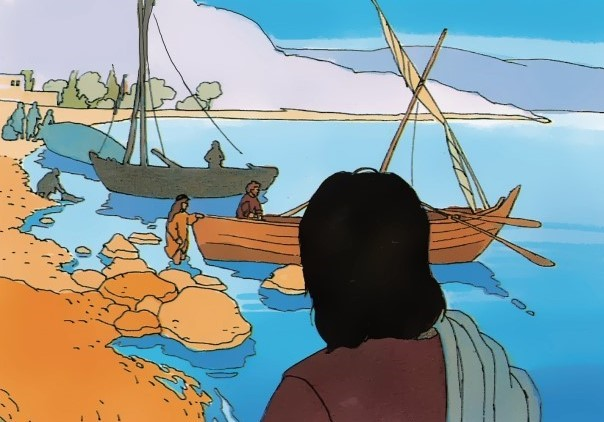
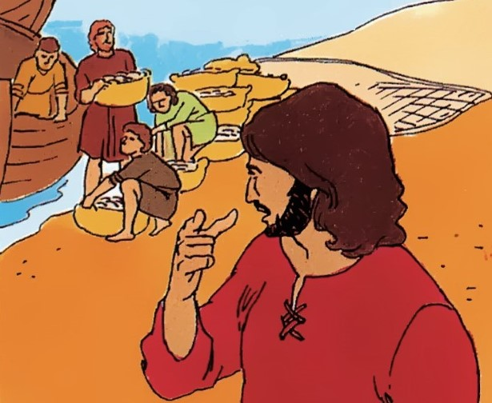
18 And straightway they forsook their nets, and followed him. 19 And when he had gone a little further thence, he saw James the son of Zebedee, and John his brother, who also were in the ship mending their nets. 20 And straightway he called them: and they left their father Zebedee in the ship with the hired servants, and went after him.
21 And they went into Capernaum; and straightway on the sabbath day he entered into the synagogue, and taught.
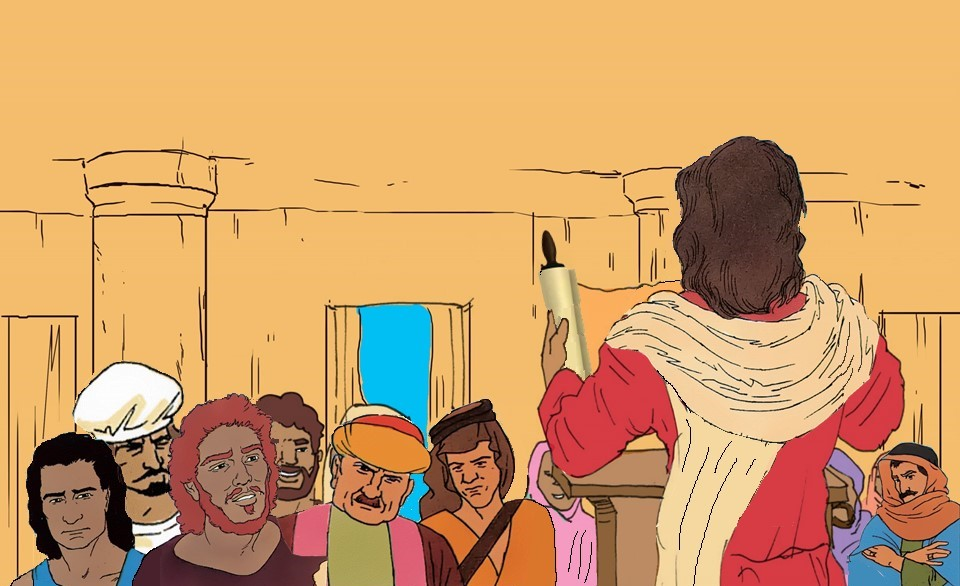
22 And they were astonished at his doctrine: for he taught them as one that had authority, and not as the scribes. 23 And there was in their synagogue a man with an unclean spirit; and he cried out,
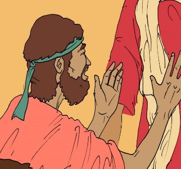
24 saying, Let us alone; what have we to do with thee, thou Jesus of Nazareth? art thou come to destroy us? I know thee who thou art, the Holy One of God. 25 And Jesus rebuked him, saying, Hold thy peace, and come out of him.
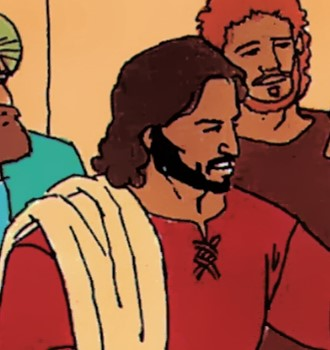
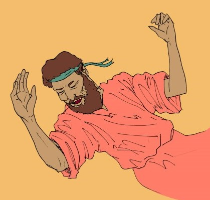
27 And they were all amazed, insomuch that they questioned among themselves, saying, What thing is this? what new doctrine is this? for with authority commandeth he even the unclean spirits, and they do obey him.
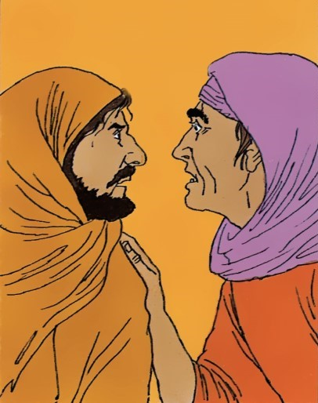
29 And forthwith, when they were come out of the synagogue, they entered into the house of Simon and Andrew, with James and John.
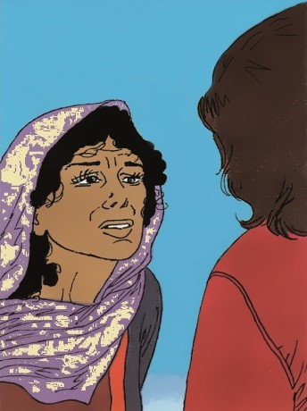
30 But Simon’s wife’s mother lay sick of a fever, and anon they tell him of her. 31 And he came and took her by the hand, and lift her up; and immediately the fever left her, and she ministered unto them. 32 And at even, when the sun did set, they brought unto him all that were diseased, and them that were possessed with devils.
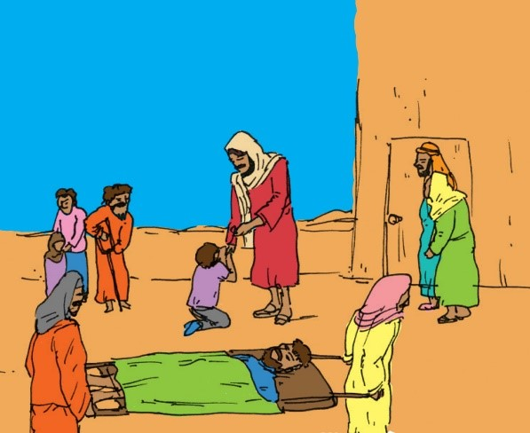
33 And all the city was gathered together at the door. 34 And he healed many that were sick of divers diseases, and cast out many devils; and suffered not the devils to speak, because they knew him.
35 And in the morning, rising up a great while before day, he went out, and departed into a solitary place, and there prayed.
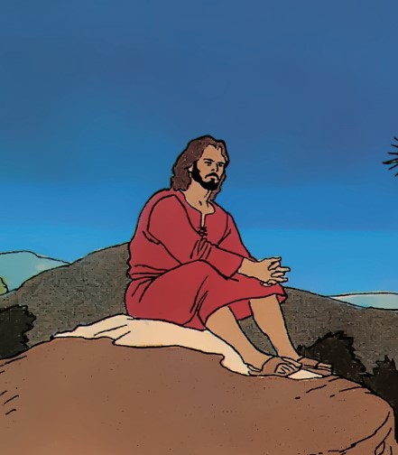
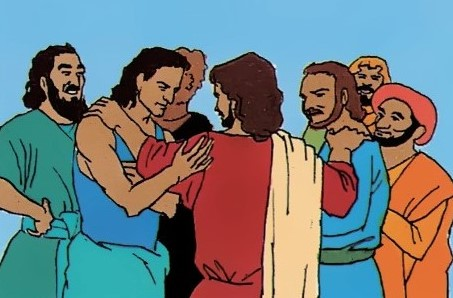
37 And when they had found him, they said unto him, All men seek for thee. 38 And he said unto them, Let us go into the next towns, that I may preach there also: for therefore came I forth.
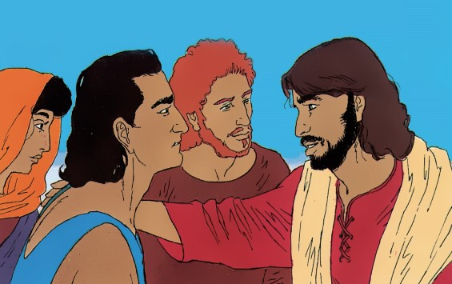
40 And there came a leper to him, beseeching him, and kneeling down to him, and saying unto him, If thou wilt, thou canst make me clean.
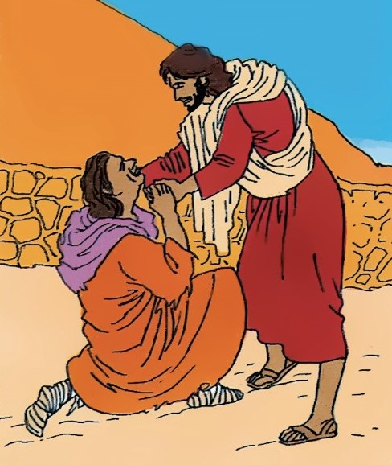
41 And Jesus, moved with compassion, put forth his hand, and touched him, and saith unto him, I will; be thou clean. 42 And as soon as he had spoken, immediately the leprosy departed from him, and he was cleansed.
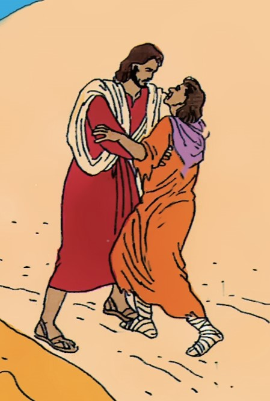
43 And he straitly charged him, and forthwith sent him away; 44 and saith unto him, See thou say nothing to any man: but go thy way, shew thyself to the priest, and offer for thy cleansing those things which Moses commanded, for a testimony unto them. 45 But he went out, and began to publish it much, and to blaze abroad the matter, insomuch that Jesus could no more openly enter into the city, but was without in desert places: and they came to him from every quarter.